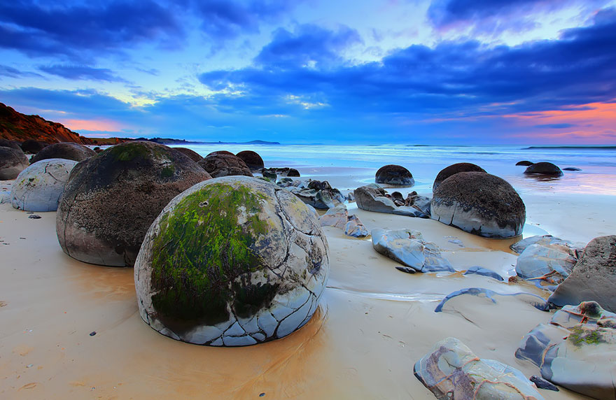

New Zealand
Dragon Egg Beach
Dragon Eggs or the Moeraki boulders are very round, very large boulders located on a stretch of Koekohe Beach. It formed over years of costal erosion. We can't wait to visit this magical beach to take tourist-y pictures inside the boulders.
